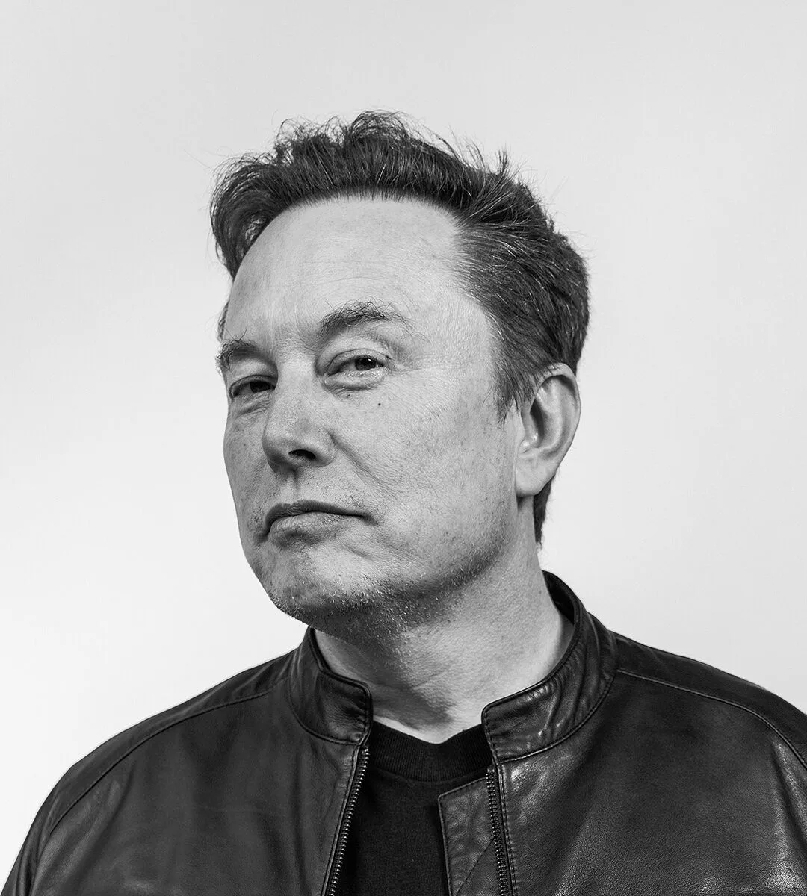

Entrepreneur, Engineer & Innovator — CEO Tesla, SpaceX & xAI
Seorang insinyur dan pengusaha kelahiran Pretoria, Afrika Selatan, yang dikenal karena visi jangka panjangnya membawa manusia menjadi spesies multi-planet sekaligus mempercepat transisi dunia menuju energi bersih. Elon dikenal dengan pendekatan first principles thinking — memecah masalah kompleks hingga ke elemen paling dasar sebelum membangun solusi dari awal.
Gaya kepemimpinannya sering digambarkan sangat langsung dan terlibat penuh di lini teknis, mulai dari desain mesin roket hingga arsitektur baterai kendaraan listrik. Ia percaya bahwa risiko besar sepadan diambil jika hasilnya berdampak jangka panjang bagi peradaban manusia.
Mendirikan perusahaan riset kecerdasan buatan dengan misi memahami alam semesta secara mendalam.
Mengakuisisi platform media sosial dan mentransformasikannya menjadi "aplikasi segalanya" bernama X.
Mengembangkan sistem terowongan transportasi bawah tanah (Loop) untuk mengurangi kemacetan kota.
Mengembangkan antarmuka otak-komputer untuk membantu pemulihan fungsi neurologis pasien.
Bergabung sebagai investor awal, lalu memimpin perusahaan menuju produksi massal kendaraan listrik dan energi surya.
Mendirikan perusahaan roket dengan misi menjadikan manusia spesies multi-planet melalui teknologi roket dapat digunakan ulang.
Startup pembayaran daring yang kemudian bergabung menjadi PayPal.
Startup direktori bisnis daring pertamanya, dijual kepada Compaq pada tahun 1999.
Latar belakang akademik di bidang fisika, ekonomi, dan teknik.
Mengambil cuti setelah dua hari untuk fokus membangun startup pertamanya, Zip2.
Menyelesaikan dua gelar sarjana sekaligus di bidang sains dan bisnis.
Memulai pendidikan tinggi sebelum pindah ke Amerika Serikat.
Menyelesaikan pendidikan menengah di kota kelahirannya.
Diakui atas pengaruhnya terhadap industri luar angkasa dan kendaraan listrik.
Penghargaan atas kontribusi terhadap inovasi teknologi global.
Pengakuan atas kontribusi pada pengembangan kendaraan listrik ramah lingkungan.